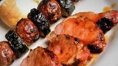

Marinated Grilled Pork Tenderloin

Description
Marinated grilled pork tenderloin is a mouthwatering delight that combines tender pork with a flavorful marinade.
The pork tenderloin is marinated in a delectable mixture of ingredients such as soy sauce, garlic, honey, ketchup, fresh parsley, sugar, cinnamon, and many others tasty ingredients.
This marinade infuses the pork with a perfect balance of savory, tangy, and sweet flavors. Once marinated, the pork is grilled to perfection, creating a caramelized and slightly charred exterior while keeping the meat juicy and tender on the inside.
Ingredients
- 1⁄4 cup honey
- 1⁄4 cup soy sauce
- 1⁄4 cup oyster sauce
- 2 tablespoons brown sugar
- 4 teaspoons minced fresh ginger root
- 1 tablespoon ketchup
- 1 tablespoon minced garlic
- 1 tablespoon chopped fresh parsley
- 1⁄4 teaspoon onion powder
- 1⁄4 teaspoon cayenne pepper
- 1⁄4 teaspoon ground cinnamon
- 2 (12 ounces) pork tenderloins
Steps
- Make marinade: Whisk together honey, soy sauce, oyster sauce, brown sugar, ginger, ketchup, garlic, parsley, onion powder, cayenne pepper, and cinnamon in a medium bowl; pour into a resealable plastic bag.
- Place pork tenderloins into the bag; coat with marinade, squeeze out excess air, and seal the bag. Marinate in the refrigerator for at least 1 hour or up to 24 hours.
- Preheat the grill for medium heat and lightly oil the grate.
- Remove pork tenderloins from marinade; shake off excess. Discard remaining marinade.
- Cook pork tenderloins on the preheated grill until no longer pink in the center, 20 to 30 minutes, turning occasionally. An instant-read thermometer inserted into the centers should read at least 145 degrees F (63 degrees C).